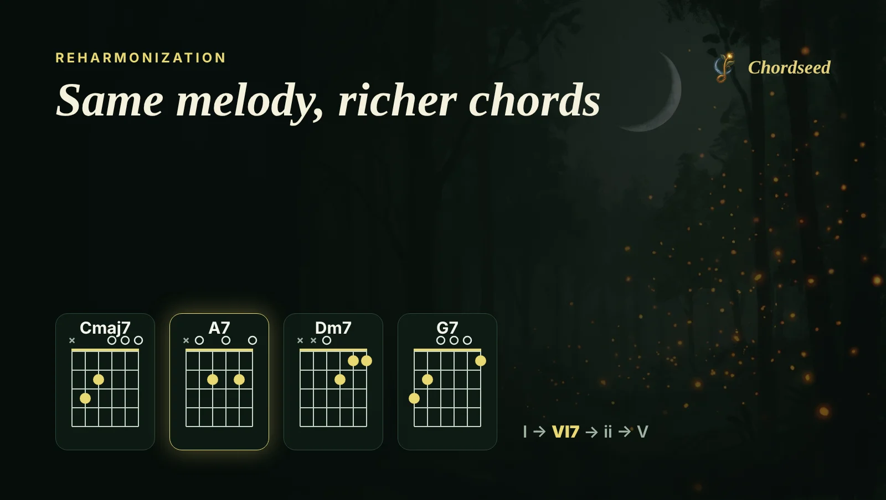

Cómo rearmonizar una canción en 5 pasos simples
Rearmonizar es mantener la melodía y cambiar los acordes que van debajo. Así una canción sencilla se vuelve jazzera, melancólica o de película. Puedes hacerlo con cinco movimientos, de muy fácil a un poco atrevido.

La única regla: respeta la melodía
Antes de cambiar un acorde, mira qué nota de la melodía suena encima. El acorde nuevo debe contener esa nota o convertirla en un color bonito (una 7ª, 9ª o 6ª). Si la nota choca, prueba otra opción. Tu oído te lo dirá al instante.
Vamos a rearmonizar esta progresión sencilla en C:
Paso 1: agrega séptimas
La mejora más fácil. Agrega una nota a cada acorde y todo suena más cálido y más “maduro”.
Paso 2: cambia acordes que comparten notas
Los acordes que comparten dos notas pueden reemplazarse entre sí. C (C E G) y Am (A C E) comparten C y E. F (F A C) y Dm (D F A) comparten F y A. La melodía casi siempre sigue encajando, pero el ánimo cambia.
| Original | Prueba con | Efecto |
|---|---|---|
C | Am o Em | Más suave, más emotivo |
F | Dm | Un paso más fluido hacia G |
G | Em | Menos empuje, más flotante |
Paso 3: agrega una dominante secundaria
Cualquier acorde puede tener su propio “acorde de tensión” que lo anuncia. Para que Dm se sienta inevitable, toca A7 justo antes. Para llegar a Am, usa E7. Estos acordes le dan mucho movimiento a la progresión.
Paso 4: toma prestado un acorde
Convierte el acorde IV en menor para un momento agridulce. En C, F se vuelve Fm. Funciona especialmente bien justo antes de volver a casa. (Lo explicamos a fondo en Acordes prestados: el truco favorito de los Beatles.)
Paso 5: la sustitución tritonal
Este es el movimiento del jazz. Cambia G7 por D♭7. Los dos acordes comparten las dos notas que crean la tensión (B y F; en D♭7 la B se escribe C♭), así que D♭7 también quiere ir a C, pero el bajo baja medio tono. Suena suave y sofisticado.
Antes y después
Junta algunos de estos movimientos y los mismos cuatro compases suenan como otra canción:
No tienes que usar todos los trucos a la vez. Muchas veces basta con un cambio bien puesto. Prueba un movimiento, canta la melodía encima y quédate con él solo si le sirve a la canción.
Pruébalo en Chordseed
Abre Enriquecer mis acordes en Chordseed, pon tu progresión y elige un estilo. Te sugiere séptimas, sustituciones y acordes de paso, te explica cada uno y toca el resultado con un instrumento real. Gratis, en tu navegador.
Abrir la app →